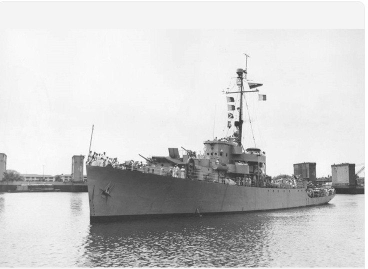

Pregón N.º 02 · Archivo y memoria naval
El nombre que había que borrar
En diciembre de 1828, un comandante que había combatido bajo las órdenes de Padilla pidió al Gobierno extinguir su apellido del casco de una goleta de la República. No sabemos si lo extinguieron. Sabemos que el nombre volvió, y que no ha dejado de volver.
Rosa Chamorro 8 min de lectura

En memoria de José Padilla, a 198 años de su fusilamiento.
El 2 de octubre de 1828, José Padilla murió fusilado en Bogotá. Casi tres meses después, una goleta de guerra de la República todavía llevaba su nombre. Renato Beluche, comandante del Primer Departamento de Marina, escribió desde Puerto Cabello al ministro de Marina para preguntar si aquel buque debía continuar llamándose así.1
La carta tenía fecha del 22 de diciembre. Beluche conocía la condena por las gacetas oficiales y los papeles públicos. Padilla, escribió Beluche, «manchó los laureles con que la Patria lo premió» y se había hecho acreedor a los castigos recibidos «por su ingratitud». Su nombre hacía «ya muy poco honor a la Nación». Solicitaba que el Gobierno le indicara cómo debía llamarse la goleta si resolvía, «como lo creo», «extinguirle el de Padilla que ahora tiene».2
Beluche conocía aquellos laureles. Cinco años antes había combatido bajo las órdenes de Padilla en Maracaibo. Eran los días en que la Independencia se disputaba todavía en las aguas del Caribe. Los españoles conservaban Puerto Cabello y mantenían sus buques de guerra en el lago de Maracaibo, mientras la República intentaba sostener una marina con barcos comprados en el extranjero, marineros de distintas procedencias y un dinero que rara vez alcanzaba. En mayo de 1823, frente a la barra del lago, los oficiales deliberaron sobre la conveniencia de arriesgar la escuadra contra las defensas enemigas. Beluche, comandante del bergantín Independiente, defendió la entrada. La patria estaba en peligro y no debía perderse un momento. El 24 de julio, después de un combate que dejó buques destrozados y hombres en el agua, la victoria fue republicana. Padilla recibió la gloria del vencedor. Beluche había contribuido a conquistarla.3
Aquel lago, comunicado con el golfo por una barra de escasa profundidad, había sido escenario de una de las últimas grandes operaciones navales de la Independencia. Por sus aguas habían cruzado bergantines, goletas, flecheras y piraguas, con marineros de las costas venezolanas, oficiales venidos de otros puertos y hombres que habían servido antes en el corso. Los prácticos conocían los bajos, aunque no siempre conseguían evitar que los buques encallaran. El Independiente de Beluche había tenido que descargar artillería, víveres y lastre para franquear el Tablazo. La República había reunido en aquellas cubiertas a hombres de trayectorias muy diferentes, bajo una misma bandera y un mando que apenas comenzaba a organizarse. Después de la victoria vendrían las disputas por los méritos y las recompensas. El propio Padilla había recomendado al Gobierno que reconociera los servicios de Beluche. No todos entendían de igual manera la gloria que acababan de compartir.4
Al año siguiente, las diferencias entre Beluche y Padilla llegaron a los impresos. Entre las acusaciones figuraban las relativas a las presas de guerra, y Padilla reunió documentos para defender su conducta. Uno de ellos era una carta llegada de Cuba, escrita por un comerciante español llamado Seguí. Su mujer y sus hijas habían viajado en una embarcación apresada por los republicanos a la salida de Maracaibo. Llevaban consigo una fortuna en doblones que, según Seguí, habían conseguido conservar porque Padilla se negó a permitir que las registraran. Algunos marineros les habían quitado unos cubiertos de plata, pero el general ordenó devolverlos. Seguí le escribió para agradecerlo, aun cuando sus gobiernos estaban en guerra. La carta era anterior a la controversia entre los dos oficiales. Padilla la hizo imprimir para responder a Beluche. El testimonio que había elegido para defender su honradez procedía de un hombre del bando enemigo.5
Por aquellos años, la República distribuía grados, honores y dignidades, pero no había aprendido a mirar de otro modo a todos sus vencedores. Padilla había nacido en Riohacha y llegado desde la marinería hasta los más altos mandos navales. Era pardo. En una sociedad que acababa de romper con la monarquía, el color de la piel seguía acompañando a los hombres en las relaciones de mando, en las disputas políticas y hasta en las controversias sobre el honor. Cartagena, con sus comerciantes, sus familias principales y los pardos de Getsemaní que habían intervenido en la revolución, conocía bien aquellas diferencias. Los títulos republicanos podían concederse por decreto; las antiguas distinciones sobrevivían en las costumbres y en el juicio de los hombres.6
En 1828, las discordias adquirieron otra gravedad. Padilla se enfrentó al general Mariano Montilla en Cartagena, fue apresado y terminó en Bogotá, donde se le condenó por su presunta participación en la conspiración de septiembre contra Bolívar. El vencedor de Maracaibo murió por sentencia del Estado al que había servido. En las gacetas que comunicaron su castigo, la gloria militar pertenecía ya al pasado.7
Pero las noticias de los hombres y las de los barcos seguían itinerarios diferentes. Mientras el general caía en desgracia, una goleta de guerra continuaba inscrita en los registros de la Marina con su apellido. El 29 de julio, Beluche había informado desde Puerto Cabello que la embarcación se encontraba lista y había salido tres días antes hacia La Guaira, donde debía abastecerse de víveres para proseguir su crucero. El nombre aparecía allí con la naturalidad de las cosas admitidas: Padilla. Una palabra suficiente para entender de qué barco se hablaba, qué provisiones necesitaba y qué órdenes debía cumplir.8
El 15 de octubre volvió a figurar en un oficio. Se trataba esta vez de la goleta holandesa Ana Catalina, detenida meses antes por el buque de guerra Padilla frente a las costas de Coro. Las autoridades habían declarado justa y legal la detención, aunque finalmente absolvieron a la embarcación extranjera, que pudo partir hacia Curazao. El apresamiento había ocurrido antes de la ejecución del general y nada en aquel documento permite afirmar que el buque siguiera navegando después de su muerte. Su nombre, sin embargo, permanecía en la correspondencia. Trece días después del fusilamiento, los escribientes de la República todavía tenían que escribirlo.9
Llegó diciembre. Beluche volvió sobre la cuestión, ahora no para informar de un crucero ni de un apresamiento, sino para solicitar un nombre nuevo. Su carta no era una orden. Tampoco daba noticia de que la goleta hubiese sido rebautizada. El comandante juzgaba indigno el apellido, suponía que el Gobierno dispondría su extinción y aguardaba instrucciones. Entre sus palabras aparece una cautela: «como lo creo». Beluche, que había combatido bajo las órdenes de Padilla y después había discutido públicamente su honor, dejaba al Gobierno la resolución de aquel último asunto.10
No se ha encontrado entre los documentos examinados la respuesta del ministro. Ignoramos si la goleta recibió otro nombre. La carta quedó entre las diligencias de una Marina ocupada en abastecer sus barcos, vigilar las costas y resolver las reclamaciones de los comerciantes extranjeros.11
Pasaron setenta y cuatro años. El escenario se había trasladado al otro océano y la antigua República de Colombia había desaparecido hacía mucho. En Panamá, mientras la guerra de los Mil Días enfrentaba a liberales y conservadores, navegaba un vapor armado con el nombre de Almirante Padilla. No era la vieja goleta de Puerto Cabello, sino otra embarcación, perteneciente a otra guerra. El 20 de enero de 1902 sorprendió al Lautaro, vapor chileno al servicio de las fuerzas gubernamentales. Hubo cañonazos, muertos y un buque hundido. Entre las víctimas se encontraba el general Carlos Albán, jefe político y militar de Panamá.12
Los periódicos extranjeros recogieron las noticias del combate. En sus columnas aparecieron los nombres del Lautaro, del Boyacá, del Chucuito, del Darién y del Gaitán, confundidos en la geografía de una guerra colombiana que se libraba también sobre el mar. Entre ellos figuraba el Padilla. Unos diarios lo llamaban cañonera liberal; otros, insurgente, revolucionaria o rebelde. También aparecía con su nombre completo: Almirante Padilla. Setenta y cuatro años antes, Beluche había pedido extinguir aquel apellido de una goleta de la República porque consideraba que deshonraba a la Nación. Ahora lo llevaba otra embarcación, que combatía contra el Gobierno colombiano. Las aguas habían cambiado, como las banderas y las causas de la guerra. El nombre había vuelto.13
Los vencedores celebraron el combate con el lenguaje heredado de las antiguas campañas. La Dirección de la Guerra liberal habló de laureles, honra y sacrificios. Lucas Caballero, entre los dirigentes de aquella contienda, proclamó «cuánto puede fructificar en nuestro suelo la cepa de los Padillas». La expresión devolvía al apellido una dignidad que Beluche le había negado en 1828. Los laureles manchados de la carta de Puerto Cabello reaparecían, casi ochenta años después, entre los honores de una victoria insurgente.14
La guerra terminó en noviembre de 1902. A bordo del acorazado estadounidense Wisconsin, los representantes de los bandos enfrentados firmaron la paz. El tratado exigía la entrega de armas, pertrechos y embarcaciones. En su artículo noveno, entre las disposiciones destinadas a concluir las hostilidades, figuraba una exigencia particular: el Gobierno reclamaba, «en primer término y muy especialmente», el vapor titulado Almirante Padilla.15
En 1828, Beluche había solicitado instrucciones para extinguir aquel nombre. En 1902, el Gobierno exigía la entrega de un barco que volvía a llevarlo. La historia de ambas embarcaciones era distinta, y también su destino. De la primera no conocemos el nombre posterior. De la segunda quedó una noticia en las relaciones de la flotilla del Pacífico.16
En 1903 figuraba allí un vapor llamado 21 de Noviembre, fecha de la paz firmada a bordo del Wisconsin. A continuación del nuevo nombre, el registro conservaba, entre paréntesis, la antigua denominación:
Antiguo Almirante Padilla.17
Pasó medio siglo. Las goletas habían desaparecido, los vapores envejecido, y una nueva generación de buques recorría los océanos llevando los nombres de las antiguas glorias republicanas. Una fragata colombiana, bautizada Almirante Padilla, había cruzado el Pacífico para combatir en Corea. En 1952 regresó al Caribe y apareció frente a Puerto López, en la Alta Guajira, tierra de salinas y vientos, abierta desde antiguo al tráfico de las Antillas. Allí, entre los cargamentos venidos de Aruba y Curazao, la Armada decomisó mercancías de contrabando. Uno de los perjudicados fue Tite Socarrás, que perdió una fortuna. La noticia llegó a Rafael Escalona, que hizo de aquella desgracia un paseo. Llamó al buque «pirata» y «bandido», y le deseó que un submarino lo mandara al fondo del mar. La fragata había sobrevivido a Corea para venir a ganarse aquellas maldiciones en la tierra donde había nacido el hombre cuyo nombre llevaba.18
Escalona llamó al paseo El Tite Socarrás. Pero Tite, que ya había perdido su fortuna, acabó perdiendo también el nombre de la canción. En su lugar quedó aquel que Beluche había querido extinguir más de un siglo antes: El almirante Padilla.19
Notas
- Enrique Ortega Ricaurte, «Almirante Renato Beluche. Documentos», Boletín de Historia y Antigüedades, 48, núms. 557–558 (marzo–abril de 1961), p. 195; transcripción de Renato Beluche al ministro de Marina, Puerto Cabello, 22 de diciembre de 1828. ↩
- Archivo General de la Nación de Colombia (AGN), Secretaría de Guerra y Marina, t. 434, ff. 579r–v, Beluche al ministro de Marina, oficio núm. 137, 22 de diciembre de 1828; reproducido en Ortega Ricaurte, «Almirante Renato Beluche», p. 195. ↩
- «Diario de las operaciones de la escuadra sobre el Zulia», mayo de 1823, y acta de la junta de oficiales, reproducidos en Ortega Ricaurte, «Almirante Renato Beluche», pp. 134–138. Para el combate de Maracaibo, véase también Jesús Clodoaldo Torres Almeyda, El almirante José Padilla (epopeya y martirio), 2.ª ed. (Bogotá: Imprenta y Publicaciones de las Fuerzas Militares, 1990). ↩
- «Diario de las operaciones de la escuadra sobre el Zulia», en Ortega Ricaurte, «Almirante Renato Beluche», pp. 134–136; José Padilla, recomendación a favor de Beluche, 1 de agosto de 1823, AGN, Secretaría de Guerra y Marina, t. 346, ff. 429r–v, reproducida en Ortega Ricaurte, pp. 138–139. ↩
- José Padilla, Una disputa de Padilla. Contestación de José Padilla, ciudadano de Colombia, a la del señor capitán de navío Renato Beluche (Cartagena: Juan Antonio Calvo, 1825), reproducida en Torres Almeyda, El almirante José Padilla, documento VIII. Incluye la carta del comerciante Seguí, fechada en Cuba el 28 de noviembre de 1823. ↩
- Aline Helg, «Simón Bolívar and the Spectre of Pardocracia: José Padilla in Post-Independence Cartagena», Journal of Latin American Studies, 35, núm. 3 (2003), pp. 447–471, https://doi.org/10.1017/S0022216X03006849. ↩
- Helg, «Simón Bolívar and the Spectre of Pardocracia», pp. 447–471; Torres Almeyda, El almirante José Padilla, para los acontecimientos de 1828 y la ejecución. ↩
- AGN, Secretaría de Guerra y Marina, t. 434, f. 686r, Renato Beluche, sección segunda, oficio núm. 8, Puerto Cabello, 29 de julio de 1828; reproducido en Ortega Ricaurte, «Almirante Renato Beluche», pp. 148–149. ↩
- AGN, Secretaría de Guerra y Marina, t. 434, ff. 482r–v, Renato Beluche al ministro de Marina, oficio núm. 100, Puerto Cabello, 15 de octubre de 1828; reproducido en Ortega Ricaurte, «Almirante Renato Beluche», p. 166. ↩
- AGN, Secretaría de Guerra y Marina, t. 434, ff. 579r–v, Beluche al ministro de Marina, 22 de diciembre de 1828; Ortega Ricaurte, «Almirante Renato Beluche», p. 195. ↩
- Ortega Ricaurte, «Almirante Renato Beluche», pp. 117–196. La ausencia de respuesta ministerial se refiere únicamente a la documentación examinada. ↩
- Félix F. Noriega, Campaña de Panamá (San José de Costa Rica: Imprenta y Librería Española, 1902), pp. 9–11; «Fight at Panama», Cottage Grove Leader (Cottage Grove, Oregón), 31 de enero de 1902, p. 7. ↩
- «Colon in Peril», Chatsworth Plaindealer (Chatsworth, Illinois), 24 de enero de 1902, p. 2 (revolutionary gunboat); «An Indecisive Battle», The Morning Oregonian (Portland, Oregón), 30 de enero de 1902, p. 3 (insurgent steamer y revolutionary steamer). Se citan las denominaciones inglesas originales; las categorías generales del ensayo no constituyen citas literales de todos los periódicos. ↩
- Dirección de la Guerra liberal, proclama de 21 de enero de 1902, firmada por Lucas Caballero como primer ayudante y secretario general, reproducida en Noriega, Campaña de Panamá, p. 10. ↩
- Tratado del Wisconsin, bahía de Panamá, 21 de noviembre de 1902, art. 9. La frase sobre el vapor Almirante Padilla se cotejó en la transcripción publicada del tratado; no con el manuscrito conservado en el Archivo Nacional de Panamá. ↩
- Beluche al ministro de Marina, 22 de diciembre de 1828, AGN, Secretaría de Guerra y Marina, t. 434, ff. 579r–v; Tratado del Wisconsin, art. 9. ↩
- República de Colombia, Decreto núm. 746, de 25 de julio de 1903, Boletín Militar de Colombia, año VIII, serie V, t. I, núm. 8 (20 de febrero de 1904), pp. 217–219, donde figura el crucero 21 de Noviembre; Ernest Gey, informe consular fechado en Panamá, 8 de noviembre de 1903, traducido en Renán Vega, «Antecedentes y consecuencias del atraco yanqui en Panamá. Una reconstrucción a partir de los archivos diplomáticos de Francia», en Heraclio Bonilla y Gustavo Montañez (eds.), Colombia y Panamá: la metamorfosis de la nación en el siglo XX (Bogotá: Universidad Nacional de Colombia, 2004), pp. 276–277: «21 de Noviembre», ex «Padilla». La formulación literal «Antiguo Almirante Padilla» del manuscrito no se ha cotejado en una fuente fechada en 1903. ↩
- Joaquín Viloria De la Hoz, De la cumbiamba al vallenato: aproximación cultural, económica y política a la música de acordeón en el Caribe colombiano, 1870–1960, Cuadernos de Historia Económica, núm. 45 (Cartagena: Banco de la República, 2017), pp. 57–58, https://doi.org/10.32468/chee.45; Luis Alfonso Rodríguez, «La fragata Almirante Padilla regresa a su puerto», Señal Memoria (RTVC), s. f., https://www.senalmemoria.co/piezas/la-fragata-almirante-padilla-regresa-su-puerto; Rafael Escalona, «El almirante Padilla», paseo vallenato, s. f. Se sigue la fecha de 1952 de Viloria. ↩
- Iván Gil, «El Tite Socarrás o El Almirante Padilla», en Anécdotas de Rafael Escalona, reproducción digital en Scribd, https://es.scribd.com/document/665466483/Anecdotas-de-Rafael-Escalona (consultada el 18 de octubre de 2026). Javier Ortiz Cassiani, «La marihuana de mi infancia», El Malpensante, núm. 212 (27 de enero de 2021), https://elmalpensante.com/articulo/4254/la-marihuana-de-mi-infancia. El autor señala que la composición se llamó inicialmente El Tite Socarrás y posteriormente El almirante Padilla. ↩
Cómo citar esta columna
Chamorro, Rosa. 2026. «El nombre que había que borrar». Pregón de esquina, Pensamiento Caribe, 18 de octubre. https://pensamientocaribe.org/pregon/el-nombre-que-habia-que-borrar.html